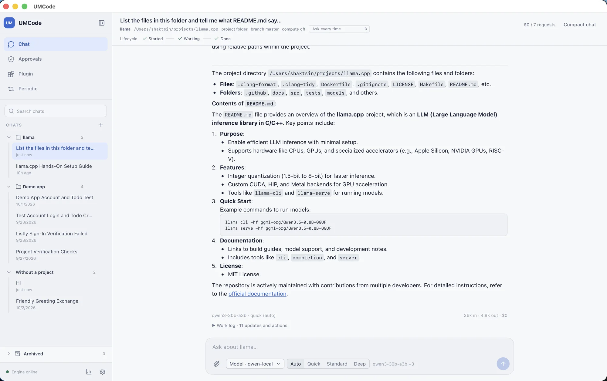
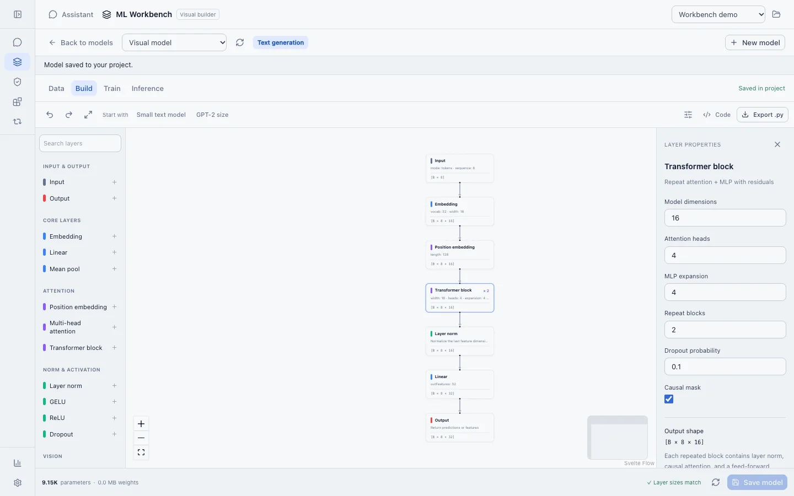
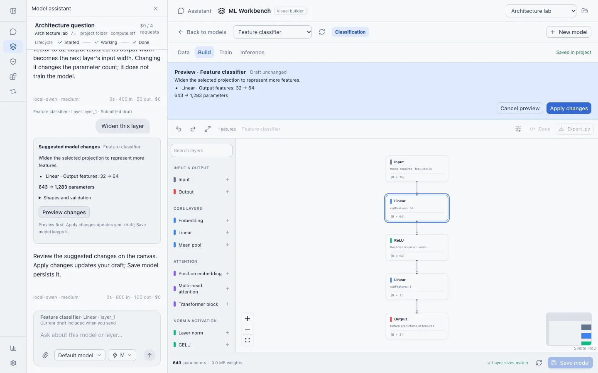
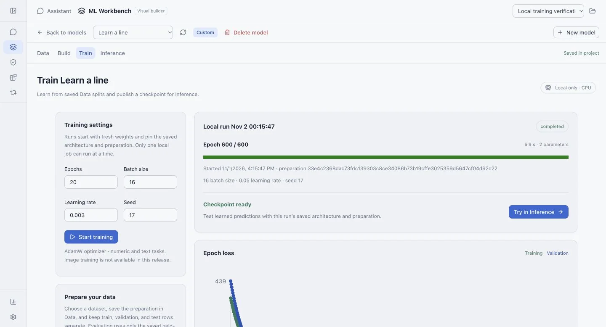
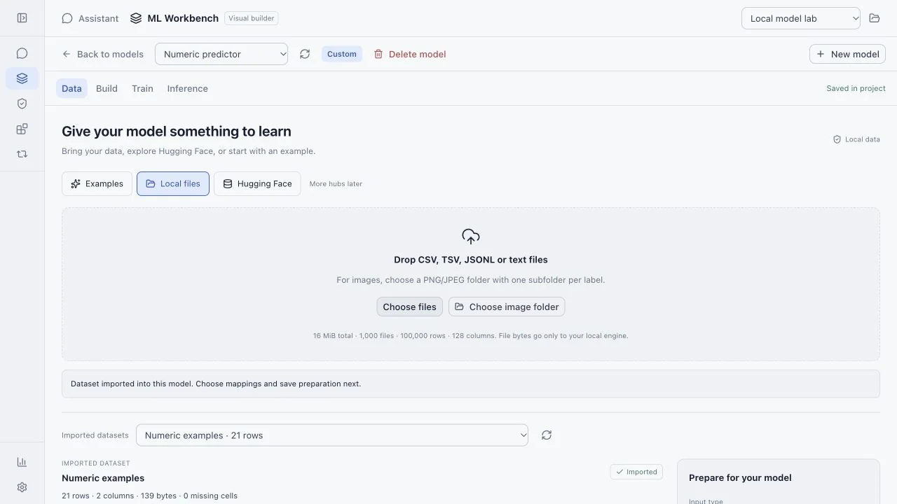
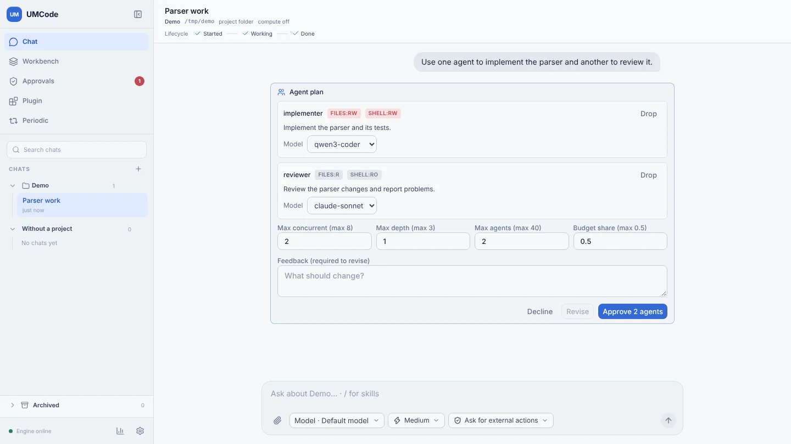

A coding agent that doesn't stop at rate limits.
Use the models you choose, hosted or local. When one hits its limit, the next in your pool takes over. Free and open source.

What is UMCode?
A Mac app for coding with the models you choose. Chats and settings stay on your Mac, and prompts go only to the models you configure.
UMCODE.md instructions stay with the folder.ML Workbench
Build, train and try small models locally.




Training runs on CPU and needs the PyTorch runtime installed separately. Image training is not included yet. Workbench guide
Agents
Ask for several in one message. Review the plan. They work in isolated copies of your project, and the lead merges the result.

Model pools
Put models in order. If one reports a quota or rate limit, the next one continues.
models:
default_pool: coding
pools:
- id: coding
name: Coding
strategy: priority
models: [claude-coding, openai-coding]
enabled: trueFrom config.example.yaml.
Long sessions, small models
Older history is summarized automatically before the window fills, and full output stays saved. UMCode reads Ollama's loaded context, and assumes 256,000 tokens when it can't tell. Set low, medium or high effort from the message box.
Get started
Download
Open the disk image and drag UMCode to Applications. Signed and notarized, so macOS opens it without a security warning.
Download UMCode.dmgAdd a model
Add a provider key in Settings, or point UMCode at Ollama or llama.cpp. Keys are stored in the macOS Keychain.
Pick a project
Choose a folder and start a chat. Sensitive actions wait for your approval above the message box.
git clone https://github.com/shaktsin/umcode
cd umcode
make app-buildOr build from source. Needs Go 1.24+ and Node.js. All versions and checksums are on the releases page.
Open source
MIT licensed and young. Bug reports, plugins and pull requests are welcome. If something in the app surprised you, say what you expected.
installer downloads across all releases · updated hourly